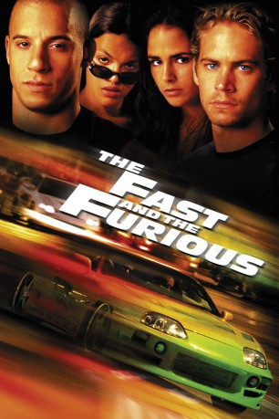

#192 The Fast and Furious 1
 gesehen am 31.08.2015
gesehen am 31.08.2015
 
 IMDB-Wertung: 6.8 / 10
IMDB-Wertung: 6.8 / 10  Metascore: 58
Metascore: 58 
Eine Reihe von Trucküberfällen hält die Polizei von Los Angeles in Atem. Mit frisierten Autos jagen Verbrecher LKWs, kapern diese und klauen die Fracht. Die Polizei glaubt, dass hinter den Überfällen der PS-Junkie Dominic steckt. Er organisiert mit seiner Freundin Letty illegale Straßenrennen in der Großstadt. Die teilnehmenden Fahrzeuge sind allesamt frisiert. Also wird jemand eingeschleust: Brian. Er arbeitet undercover für die Polizei und ist in Doms Schwester verliebt...
Jahr: 2001
Dauer: 106 Minuten
FSK: 16
Land: USA Studio: Universal PicturesTonspuren: DTS - ,
Untertitel: Deutsch,
Auflösung: 1080p (1920x816) Größe: 6676 MB
Genre: Action, Krimi, Thriller
Regisseur:  Rob Cohen
Rob Cohen
Drehbuch: Ken Li, Gary Scott Thompson, Gary Scott Thompson, Erik Bergquist, David Ayer
Soundtrack: BT
Darsteller:
 Paul Walker als Brian O'Conner
Paul Walker als Brian O'Conner Vin Diesel als Dominic Toretto
Vin Diesel als Dominic Toretto Michelle Rodriguez als Letty
Michelle Rodriguez als Letty Jordana Brewster als Mia Toretto
Jordana Brewster als Mia Toretto Rick Yune als Johnny Tran
Rick Yune als Johnny Tran Chad Lindberg als Jesse
Chad Lindberg als Jesse- Johnny Strong als Leon
 Matt Schulze als Vince
Matt Schulze als Vince Ted Levine als Sgt. Tanner
Ted Levine als Sgt. Tanner Ja Rule als Edwin
Ja Rule als Edwin Vyto Ruginis als Harry
Vyto Ruginis als Harry Thom Barry als Agent Bilkins
Thom Barry als Agent Bilkins- Stanton Rutledge als Muse
 Noel Gugliemi als Hector
Noel Gugliemi als Hector Beau Holden als Ted Gassner
Beau Holden als Ted Gassner Reggie Lee als Lance Nguyen
Reggie Lee als Lance Nguyen David Douglas als Rasta Racer
David Douglas als Rasta Racer- Neal H. Moritz als Ferrari Driver
 F. Valentino Morales als Dispatcher
F. Valentino Morales als Dispatcher Dan Andreiu als Driver , uncredited
Dan Andreiu als Driver , uncredited- Rob Cohen als Pizza Hut Delivery Guy , uncredited
 Chic Daniel als LAPD Officer with Shotgun , uncredited
Chic Daniel als LAPD Officer with Shotgun , uncredited- Michael G. Kehoe als Party Crew Member , uncredited
 Raul Limon als Cholo Racer , uncredited
Raul Limon als Cholo Racer , uncredited- Norman Gregory McGuire als Punk Dude , uncredited
- Talia O'Neal als Hotty with a body , uncredited
- Angela Rockwood als Hot Chick , uncredited
- Vanessa Viola als Hot Chick , uncredited
- R.J. de Vera als Danny Yamato
- Peter Navy Tuiasosopo als Samoan Guard
- Doria Anselmo als Ferrari Passenger
- Glenn K. Ota als Johnny's Father
 Mike White als Night Truck Driver
Mike White als Night Truck Driver- Delphine Pacific als Racer's Edge Clerk
- Monica Tamayo als Monica
- Megan Baker als Gimel
- Tammy Monica Gegamian als Edwin's Babe
- Adam Carrera als Surfer , uncredited
- Renee Garcia als Racer babe , uncredited
- Da Han als Driver , uncredited
- Flora Huang als Biker Girl , uncredited
- Sarai Koo als Asian Female , uncredited
- Julie Krystina als Racer's Girlfriend , uncredited
- January Pugh als Edwin's Girl , uncredited
- Felicia Tang als Hot Chick , uncredited
Datei: X:\7+mehr(A-Z)\Fast and Furious\Fast and Furious 1, The (2001, FSK16, 1920x816).mkv seit 06.02.2015
Festplatte: HD Collection-7+mehr(A-Z)+Person
 Es gibt insgesamt 13 Filme in der Gruppe '7+mehr(A-Z)\Fast and Furious'
Es gibt insgesamt 13 Filme in der Gruppe '7+mehr(A-Z)\Fast and Furious'